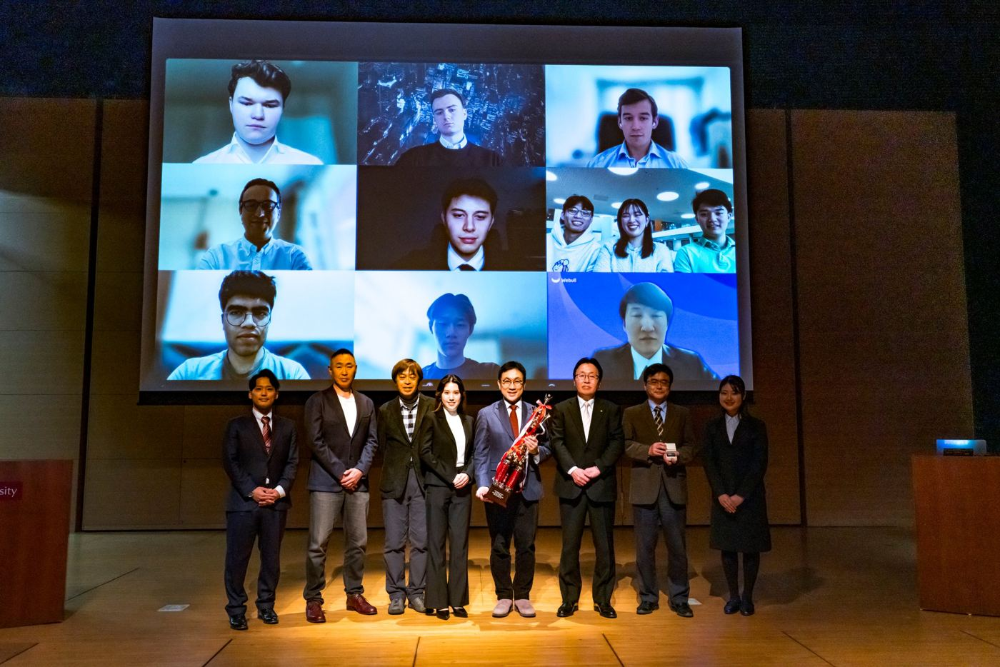

Past editions
WIC began in 2024. The 2025 edition brought together 16 universities from 9 countries.

WIC2025
16 universities from 9 countries competed over three months, from December 15, 2025 to March 13, 2026, placing 2,913 trades and submitting 23 reports.
Results
| Overall Performance, 1st | LMU Investment Club, Ludwig Maximilian University of Munich | +33.3% |
|---|---|---|
| Overall Performance, 2nd | TU Investment Club, Technical University of Munich | +14.0% |
| Overall Performance, 3rd | IFSA Geneva, University of Geneva | +1.2% |
| Most Valuable Player | Hana Shigeta, University of Sheffield | +54.1% |
| Trader's Award (reports) | TU Investment Club | 93 / 100 |
| Options Trading Award | LMU Investment Club | +46.2% |
Participating universities
- Ludwig Maximilian University of Munich — LMU Investment Club (Germany)
- Technical University of Munich — TU Investment Club (Germany)
- RWTH Aachen University — Aachen Investment Club (Germany)
- University of Geneva — IFSA Geneva (Switzerland)
- University of Sheffield — Investment Society (UK)
- University of Alberta — The Business Finance Association (Canada)
- University of Toronto — Rational Capital Investment Club (Canada)
- University of California, Los Angeles (US)
- Roger Williams University — MBA Program (US)
- Indian Institute of Technology Roorkee — Finance Club IITR (India)
- University of Delhi — Alpha Research & Investment Cell (India)
- University of New South Wales — Alternative Investment Society (Australia)
- Universiti Kebangsaan Malaysia — Bursa Young Investor Club (Malaysia)
- Waseda University — Forward Investment Club (Japan)
- Keio University (Japan)
- Meiji University (Japan)
WIC2024
The first edition ran for two months with 12 universities from 9 countries. TU Investment Club of the Technical University of Munich won with a return of 28.4%, growing its portfolio from $300,000 to $384,000.